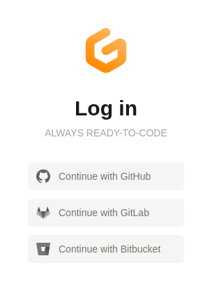
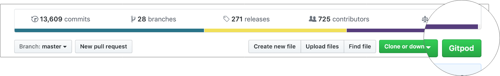
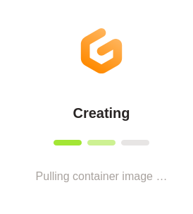
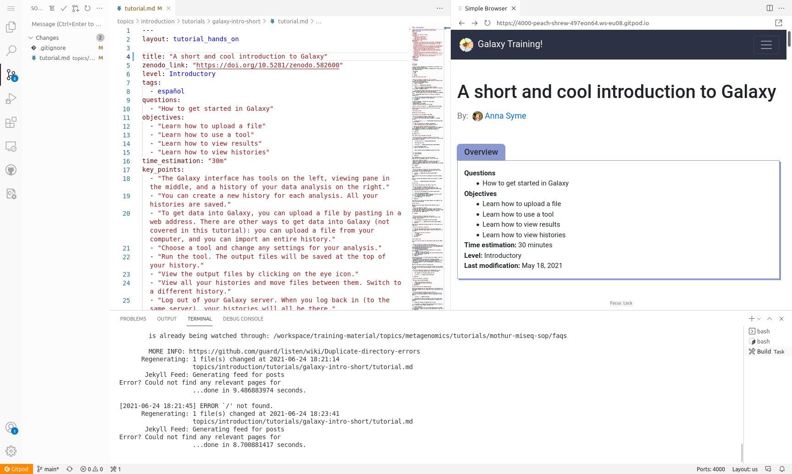
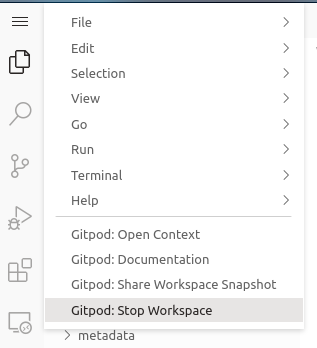

Running the GTN website online using GitPod
 Saskia Hiltemann
Saskia HiltemannOverview
Questions:Objectives:
How can I get a preview of the GTN website using GitPod?
Preview the GTN website online via GitPod
Make changes to the GTN website and preview those changes
Time estimation: 15 minutesSupporting Materials:Last modification: Jun 25, 2021
 Questions:
Questions:
Introduction
If you are working on your own training materials and want preview them online without installing anything on your computer, you can do this using GitPod!
Agenda
In this tutorial, you will learn how to run a local instance of the GTN website:
Setting up Gitpod
hands_on Hands-on: Setting up GitPod
- Create a fork of the GTN GitHub repository
- Go on the GitHub repository: github.com/galaxyproject/training-material
- Click on th Fork button (top-right corner of the page)
tip: Already have a fork of the GTN?
If you already have a fork, fantastic! But a common issue is that the
mainbranch gets outdated, or your fork was from before we renamed themasterbranch tomain.
- Start by browsing to your fork in GitHub
- Check the default branch that is shown? Does it say
master? Then you need to update it.
- Go to your fork’s settings
- Find “Branches” on the left
- If it says master you can click on the ⇆ icon to switch branches.
- Select
main(it may not be present).- If it isn’t present, use the pencil icon to rename
mastertomain.- Now you can update it in the next step
Is your fork using
main? Fantastic, but you might need to update it. GitHub has a built in feature for this as shown below:
- Open your browser and navigate to gitpod.io
- Log in with GitHub 
- Copy the link to your fork of the GTN, e.g.
https://github.com/shiltemann/training-materialIn the browser’s address bar, prefix the entire URL with
gitpod.io/#and press Enter.For example,
gitpod.io/#https://github.com/<your username>/training-materialtip Tip: Make this even easier with the GitPod browser extension!
- To make this even easier, you can install the GitPod browser extension
- Now it is just a single click to open any GitHub repository in GitPod 
- Gitpod will now configure your environment. This may take some time 
- Once the setup is finished, you should see a page something like this:


The GitPod Workspace
Let’s have a closer look at the GitPod workspace:
- Left: Here you see all the files in the GTN repository
- Top: This is the main window where you can view and edit files
- Bottom: Terminal window. Here you can type commands (e.g. to build the website preview) and read output and error messages.

Build and preview the GTN website
Before we start making any changes, let’s build the website and get a live preview.
hands_on Hands-on: Setting up GitPod
In the terminal window (bottom), type the following command:
make serve-gitpod
- The first time you run this command, it will install some dependencies, so it may take a little bit of time (a few minutes)
- Next times will be a lot faster! (~30 seconds)
When the build process is finished, the terminal will show you a link, and a window should popup with a preview on the right.
You may need to click ‘Try Again’ to load the GTN.
Click on the link in the terminal to see the GTN in full-screen:
Server address: http://127.0.0.1:4000/training-material/
tip Tip: Not opening?
Some browsers block popups by default, you may need to allow GitPod to show popups in order to click links.
- This will take you to a preview of the GTN website
- Note: It will take you the 404 page because GitPod doesn’t know the location of the GTN homepage, but from here you can just click the homepage button.


Editing Training Materials on GitPod
Now that you have the GitPod environment working and we have a live preview up, let’s make some changes to the GTN materials and get an instant preview.
Scenario: You have spotted a typo in one of the tutorials, and would like to fix this and see the resulting GTN webpage.
hands_on Hands-on: Make and view changes
- In the preview of the GTN website, open the following tutorial:
- Topic: “Introduction to Galaxy Analyses” topic
- Tutorial: “A Short Introduction to Galaxy””
- We will edit this tutorial and watch the live preview window for the effects
On the file browser on the left, open the following file:
topics/introduction/tutorials/galaxy-intro-short/tutorial.mdtip Tip: Finding files faster?
You can use the key combination ctrl-p to launch the file search dialog and simply enter the text
topics/introduction/tutorials/galaxy-intro-short/tutorial.md- Change the title of the tutorial
- From: “A Short Introduction to Galaxy”
- To: “A Short and Cool Introduction to Galaxy”
- You should immediately see a message in the terminal saying “regenerating”. GitPod has detected your changes and is rebuilding the website.

- Move to the top right panel where the GTN is previewed and refresh the frame
- Firefox:
right-click -> This Frame -> Reload Frame- Chrome:
right-click -> Reload frame- You can also open the preview in it’s own brower tab, using the galaxy_instance button at the top-right corner of the preview window. Then you can reload the page the regular way (e.g. F5 or ctrl + r or the reload button in the browser)
- You should see the change you made: 

In this way you can edit files in the text editor, and see the effects in the website preview.
Saving your changes back to GitHub
When you have finished your changes, it all looks good in the preview, you want to save your changes back to GitHub so that you can either continue later, or make a Pull Request to the GTN to contribute your changes.
hands_on Hands-on: Save changes
- Option 1: via the terminal
- Hit ctrl+c if your preview was still running to stop it
- Create a new branch, commit your changes, push changes:
git checkout -b fix-title git commit -m "update tutorial title" topics/introduction/tutorials/galaxy-intro-short/tutorial.md git push origin fix-title- Option 2: via the web interface
- Create a new branch:
- On the bottom-left, click on the branch logo (probably “master” or “main”)
- Enter
fix-titleas the name for your new branch (at top of window)- Choose “+ Create new branch…” from the dropdown
- Commit changes:
- On the left menu, click on the “changed files” tab
- Click on the “+” icon next to the file we edited to stage changes
- Hit the checkmark icon at the top to commit the changes
- Enter a commit message (top of window) - Publish changes
- Click the cloud button at bottom left to publish your changes
- Your changes are now saved to your fork, and you can make a PR via the GitHub interface.
- If you used option 1 and want to do that right away, you can click on the link in the terminal:
Note: GitPod Permissions
If this is your first time using GitPod, you may need to grant permissions to let GitPod push to your GitHub fork
This will take you through a process to authorize GitPod, and set permissions
If it doesn’t take you to GitPod’s permission page because your browser blocks popups, you can set them on this page.


Closing your GitPod Workspace
Everybody gets 50 hours per month for free on GitPod, so it is wise to close your GitPod workspace when you are finished with it, to conserve your quotum.
hands_on Hands-on: Shutting down your GitPod workspace
- Click on the menu button at the top left corner of the screen
- Choose “Gitpod: Stop Workspace”

Key points
GitPod can be used to serve the GTN training materials
Frequently Asked Questions
Have questions about this tutorial? Check out the FAQ page for the Contributing to the Galaxy Training Material topic to see if your question is listed there. If not, please ask your question on the GTN Gitter Channel or the Galaxy Help ForumFeedback
Did you use this material as an instructor? Feel free to give us feedback on how it went.

Citing this Tutorial
- Saskia Hiltemann, 2021 Running the GTN website online using GitPod (Galaxy Training Materials). https://training.galaxyproject.org/training-material/topics/contributing/tutorials/gitpod/tutorial.html Online; accessed TODAY
- Batut et al., 2018 Community-Driven Data Analysis Training for Biology Cell Systems 10.1016/j.cels.2018.05.012
details BibTeX
@misc{contributing-gitpod, author = "Saskia Hiltemann", title = "Running the GTN website online using GitPod (Galaxy Training Materials)", year = "2021", month = "06", day = "25" url = "\url{https://training.galaxyproject.org/training-material/topics/contributing/tutorials/gitpod/tutorial.html}", note = "[Online; accessed TODAY]" } @article{Batut_2018, doi = {10.1016/j.cels.2018.05.012}, url = {https://doi.org/10.1016%2Fj.cels.2018.05.012}, year = 2018, month = {jun}, publisher = {Elsevier {BV}}, volume = {6}, number = {6}, pages = {752--758.e1}, author = {B{\'{e}}r{\'{e}}nice Batut and Saskia Hiltemann and Andrea Bagnacani and Dannon Baker and Vivek Bhardwaj and Clemens Blank and Anthony Bretaudeau and Loraine Brillet-Gu{\'{e}}guen and Martin {\v{C}}ech and John Chilton and Dave Clements and Olivia Doppelt-Azeroual and Anika Erxleben and Mallory Ann Freeberg and Simon Gladman and Youri Hoogstrate and Hans-Rudolf Hotz and Torsten Houwaart and Pratik Jagtap and Delphine Larivi{\`{e}}re and Gildas Le Corguill{\'{e}} and Thomas Manke and Fabien Mareuil and Fidel Ram{\'{\i}}rez and Devon Ryan and Florian Christoph Sigloch and Nicola Soranzo and Joachim Wolff and Pavankumar Videm and Markus Wolfien and Aisanjiang Wubuli and Dilmurat Yusuf and James Taylor and Rolf Backofen and Anton Nekrutenko and Björn Grüning}, title = {Community-Driven Data Analysis Training for Biology}, journal = {Cell Systems} }
Congratulations on successfully completing this tutorial!
Developing GTN training material
This tutorial is part of a series to develop GTN training material, feel free to also look at:
- Overview of the Galaxy Training Material
- Adding auto-generated video to your slides
- Contributing with GitHub via command-line
- Contributing with GitHub via its interface
- Creating a new tutorial
- Creating content in Markdown
- Creating Interactive Galaxy Tours
- Creating Slides
- Generating PDF artefacts of the website
- Including a new topic
- Running the GTN website locally
- Running the GTN website online using GitPod
- Tools, Data, and Workflows for tutorials
- Updating diffs in admin training